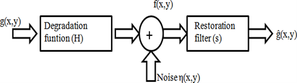
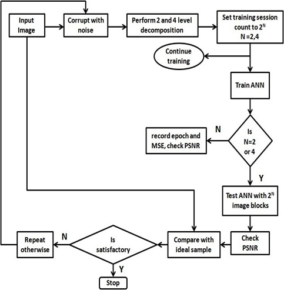

Introduction
Images can be degraded during acquisition, processing, compression, transmission, and reproduction. We apply artificial neural networks (ANNs) to restore medical images adaptively.
About Me
I am an Electronics and Communication Engineer (B.Tech, M.Tech) focusing on image restoration. My work aims to enhance image clarity and integrity using advanced processing techniques.
Image Processing
Image processing involves analyzing and manipulating images to enhance their quality and extract useful information. Digital image restoration is a process of improving the appearance of an image by removing noise, blurring, or other imperfections. It is a technique used to enhance the quality of an image by removing unwanted artifacts and improving its visual appearance. Image restoration is an important part of image processing and is used in various applications such as medical imaging, satellite imaging, and forensic analysis.
Degradation Model
ANN-Based Image Restoration
ANN (Artificial Neural Networks) simulate biological neural networks to remove noise and restore degraded images. It is an adaptive system changing its structure during a learning phase. Commonly neural networks are adjusted, or trained, so that a particular input leads to a specific target output. Typically many such input/target pairs are used, in this supervised learning, to train a network. Batch training of a network proceeds by making weight and bias changes based on an entire set (batch) of input vectors.
Types of Noise in Image Processing
- Gaussian Noise
- Salt and Pepper Noise
- Poisson Noise
- Speckle Noise
The de-noised images from ANN processing are compared using Mean Square Error (MSE) and Peak Signal-to-Noise Ratio (PSNR). A set of experiments are performed for the entire image and for the level 2 and 4 decomposition of the image through ANN. The de-noised images obtained through ANN are shown in Figure 3 and Figure 4 respectively.
Conclusion
In conclusion, ANN-based image restoration techniques provide a robust and adaptive approach to improving image quality. By effectively removing noise and restoring degraded images, these methods have significant applications in fields such as medical imaging, satellite imaging, and forensic analysis. The results demonstrate the potential of ANN in achieving high-quality image restoration with measurable improvements in MSE and PSNR.